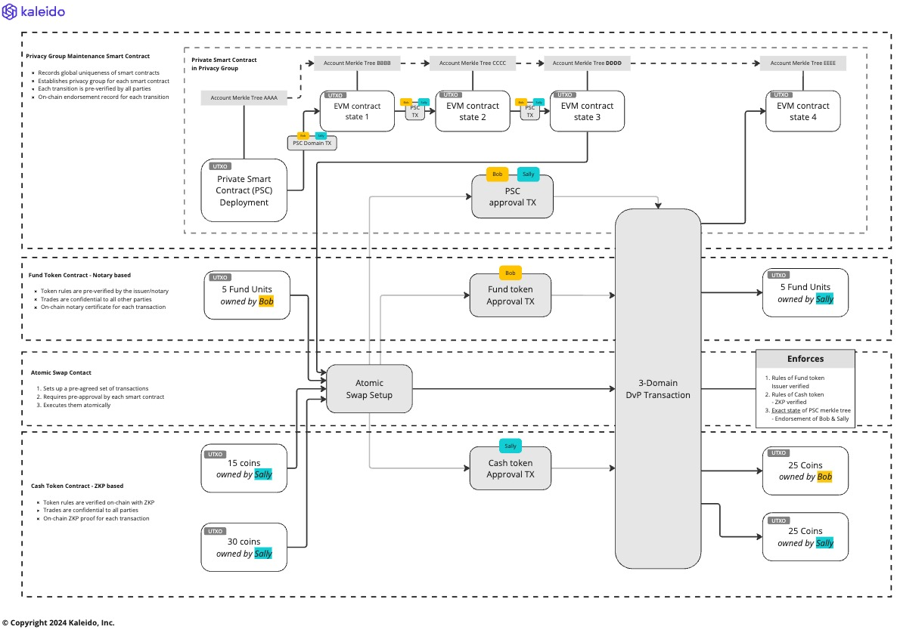

Atomic Interop of Privacy Preserving Smart Contracts¶
Paladin allows different privacy preserving smart contracts, using different underlying technologies, to interoperate atomically on a single shared EVM ledger.
The primary classes of privacy preserving smart contracts are:
- Token contracts verified via Zero-knowledge Proofs
- Learn more about Zeto
- Token contracts verified via Notary / Issuer pre-verification
- Learn more about Noto
- EVM Private Smart Contracts verified by Privacy Group endorsement
- Learn more about Pente
TODO: Feel like a high-level diagram would be helpful here.
DvP, PvP and other use cases¶
The ability to transact atomically on a single shared ledger is important to implement core use cases such as: - Delivery vs. Payment (DvP) - Payment vs. Payment (PvP)
These categories of use case often require complex multi-party flows to setup, agree and execute a transaction across multiple fungible, non-fungible and other tokenized assets.
Without a shared ledger supporting atomic transactions, it is necessary to use digital (time-lock based) or 3rd party escrow to manage counter-party risk at stages in the transaction flow where actions need to occur in separate atomic transactions in different ledgers/blockchains.
Tokens and programmability¶
Some features for atomic interop are built directly into the tokens themselves - the digital currencies and digital assets.
However, if the functions of every possible business flow needed to be pre-built directly into the tokens themselves, then innovation would be very difficult for the ecosystem.
So to make these tokens fully programmable there needs to be privacy preserving smart contract layer that allows ecosystem developer to create complex flows on top of the underlying token contracts.
The Ethereum ecosystem has excelled in enabling this form of adoption - with countless use cases programmed in EVM, using the interoperability of public token interface standards such as ERC-20, ERC-721, ERC-1155 and others.
The Ethereum ecosystem has also been the hub of innovation on privacy preserving approaches to build new tokens using advanced cryptography like Zero-knowledge proofs. These tokens cannot, by definition, implement the base public ERC standards directly, but they can provide similar privacy-preserving alternatives.
Paladin brings these streams of innovation together by defining the interface standards both: - On-chain: - To allow each privacy preserving smart contract to function very differently internally - Off-chain: - To allow enterprises to transact at scale, across many token ecosystems, with a single runtime engine
See the Programming Model section for more information on how individual privacy preserving smart contacts are built.
Approval-based atomic transactions¶
The first type of atomic interop supported by Paladin is approval-based atomic transactions.

In the above example Bob and Sally are performing a DvP of some privacy preserving cash tokens, and some privacy preserving bond tokens, in coordination with a programmed EVM private smart contract that only Bob and Sally are party to.
There are 4 ***base EVM** ledger smart contracts in this worked example:
- Privacy Group Maintenance Smart Contract
- This enforces the state transitions of the EVM smart contract private to Bob & Sally
- Each private smart contract has it's own set of UTXO states
- There could be many thousands of different EVM smart contracts running independently and privately, backed by this one base EVM smart contract
- Learn more in Pente
- Fund Token Contract example - Notary Based
- Enforcing the issuance, transfer, registry and other functions of the digital asset
- Pre-verification by a trusted party is necessary for each transaction
- The issuer, registrar, or transfer-agent has visibility of all transactions/data
- Transactions are confidential and anonymous between token holding parties
- The token is maintained through UTXO states representing ownership
- All tokens are trusted by all parties, because they trust the issuer
- Learn more in Noto
- Cash Token Contract example - ZKP Based
- Enforcing total conservation of value for fungible cash tokens
- Transactions are confidential and anonymous to all
- Transfers require a zero-knowledge proof pre-calculated by the spender, to be verified on the base EVM ledger
- Swap Contract - pure public EVM
- Records the signature of an immutable set of pre-prepared transactions
- Records the right privacy preserving smart contract
- Has an unique smart contract account address to be authorized to complete the transaction (standard EVM swap semantics)
- Contains simple
execute()function that invokes each smart contract in turn - All smart contract sub-transactions must complete, or the transaction
reverts
Pre-approval/setup phase¶
Before approval can happen:
- Some arbitrary number of EVM private smart contract transitions have occurred between Bob & Sally that resulted in an agreed state
- This state is represented by the merkle tree root of one or more private smart contracts
- Each state transition up to that point was agreed by Bob & Sally, because they were in the Privacy Group for the smart contract
- Bob has constructed a transaction that transfers some Fund tokens to Sally
- Sally has constructed a transaction that transfers some Cash tokens to Bob
Approval/prepare phase¶
The approval phase requires multiple transactions:
- One party gathers the pre-approval information for all transactions, and deploys the swap contract for this pre-approved list
- This must happen before the approvals, so the smart contract account address is known
- An approval transaction for each privacy preserving smart contract, is executed to approve the account of the swap contract to finalize each sub-transaction:
- a) Private EVM - endorsed by Bob & Sally based on the pre-execution done to generate the signature of the transaction in the pre-approval phase
- b) Fund - notarized by the issuer/transfer-agent of the fund
- c) Cash - by submitting a zero-knowledge proof
These are 4 separate EVM transactions (1, 2a, 2b, 2c), where parallelism is possible for the approval transactions (2a, 2b, 2c).
Note that the execution transaction below can be automatically chained to the last of the approval transactions.
Execution/commit phase¶
Once all of the approvals are in place, any party can submit a transaction to the execute() function on the swap mark contract to complete the transaction atomically.
This phase actually spends the UTXO states inside of each of the privacy preserving smart contracts, and creates the new states.
- The Fund transfer happens - tokens move from Bob to Sally
- The Cash transfer happens - tokens move from Sally to Bob
- The Private EVM smart contract transition happens
These happen as part of a single EVM transaction, so are atomic on the shared ledger.
Post execution¶
The most important characteristic of this flow, is that after this atomic transaction is complete the rules of each privacy preserving smart contract have been obeyed without any special knowledge needed by other parties transacting in that domain.
- Sally can spend her fund tokens, without anyone knowing they came from Bob
- Except Bob, Sally and the notary for the fund
- Bob can spend his cash tokens, without anyone known they came from Sally
-
- Except Bob and Sally
- Bob & Sally can continue to process new EVM transactions in their private smart contract